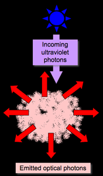
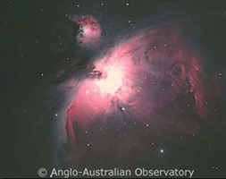
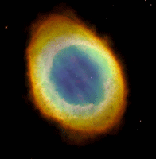

Emission nebulae are clouds of ionised gas that, as the name suggests, emit their own light at optical wavelengths. Their mass generally ranges from 100 to 10,000 solar masses and this material can be spread over a volume of less than light year to several hundred light years. For this reason, their densities are highly varied, ranging from millions of atoms/cm3 to only a few atoms/cm3 depending on the compactness of the nebula. Typically they have densities of the order of a thousand atoms/cm3, which is still extremely rarified compared to the air we breathe on Earth (2.5×1019 particles/cm3), and their average temperature is around 10,000 Kelvin.
One of the most common types of emission nebula occurs when an interstellar gas cloud dominated by neutral hydrogen atoms is ionised by nearby O and B type stars. These extremely hot and luminous stars give off vast quantities of high-energy ultraviolet (UV) photons which break the neutral hydrogen atoms into hydrogen nuclei and electrons. These later recombine to form neutral hydrogen again, but this time in an excited state. As the neutral hydrogen atom returns to its lowest energy state, it emits photons at wavelengths equivalent to the energy differences between the allowed energy states of hydrogen. At optical wavelengths, the most important of these transitions corresponds to a wavelength of 656.3nm in the red end of the spectrum. This is the wavelength of Hα, and it is this transition that gives emission nebulae their distinctive red colour.
This type of emission nebula is normally referred to as a HII region (pronounced H-two region), since it is common practice for astronomers to refer to neutral hydrogen as HI (H-one) and ionised hydrogen as HII. These nebulae are strong indicators of current star formation since the O and B stars that ionise the gas live for only a very short time and were most likely born within the cloud they are now irradiating. One of the most famous emission nebulae is the Orion Nebula (M42) located just below Orion’s belt.
Another common type of emission nebula is a planetary nebula. These objects consist of a central white dwarf star surrounded by clouds of gas released as the original star evolved to the white dwarf phase. In this case, the excited gas is not necessarily dominated by HII, but can also contain significant amounts of ionised helium (HeII; blue emission) and doubly-ionised oxygen (OIII; green emission). Since much more energy is required to ionise helium than hydrogen, the bluest areas of planetary nebulae are the hottest and indicate the areas of highest excitation.
|

The Orion Nebula (M42) is possibly the most famous emission nebula. Massive stars located in the heart of the nebula are bombarding the gas with UV radiation causing it to glow.
Credit: AAO/David Malin |

The Ring Nebula is a planetary nebula showing regions of ionised nitrogen (red), oxygen (green) and helium (blue). The central white dwarf star is also visible here.
Credit: NASA |